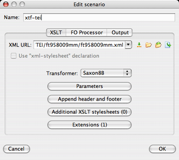
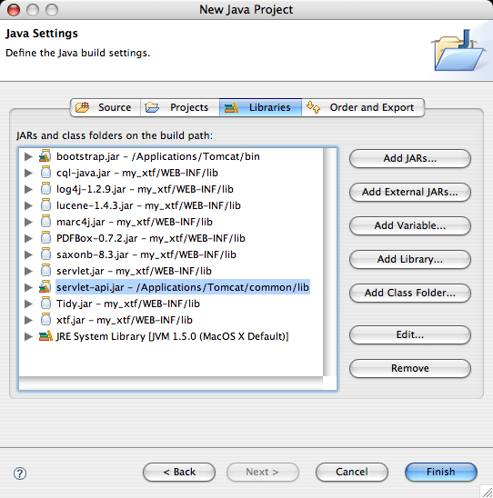

XTF Tips and Tricks
Table of Contents
- Introduction
- Debugging XTF Stylesheets
- Debug Step Mode
- Using "Raw" Mode
- One Frame at a Time
- Using <xsl:message>
- Turning on "debug" log mode
- Running Saxon from the Command-Line
- Index Subsets of Data
- Setting up External Tools
- Using <oXygen/> with XTF
- Building XTF from the Source Code
- Using Eclipse with XTF
- Using Luke with XTF
- Miscellaneous
Since XTF involves a fair amount of customization in XSLT, you're likely to create stylesheet bugs as you develop. This section covers ways to efficiently track down the source of a problem. In particular, we focus here on debugging strategies that can be used in almost any XTF installation, without external tools. However, it should be noted that integrated development environments such as <oXygen/> and Eclipse can often provide more powerful debugging tools; setting up these environments to work with XTF is covered in a separate section on External Tools later in this document.
A great way to get a hands-on feel for how crossQuery works is to use the built-in "Debug Step" mode. Simply add &debugStep=1 to any search URL. The generated web page will let you step through the entire process, with detailed explanations and real data. The first step looks like this:

Clicking on the links allows you step through the process, and to see the input and output of each stage in the crossQuery data flow, from the initial parameters to the query parser to the result formatter.
Currently, dynaXML doesn't support a debug step mode, mainly because doubling the number of frames in the already frame-heavy display mode would be quite clumsy. However, this might be added to dynaXML at some point in the future. Still, the data flow in dynaXML is much the same as in crossQuery, so learning one will help you to understand the other.
Both crossQuery and dynaXML support a special "raw" mode useful if you just want to know the exact XML input that's being sent to the formatter (Result Formatter or Document Formatter, respectively.)
This mode is activated by simply adding &raw=1 to an XTF URL in your browser. Instead of calling the formatter stylesheet, the full XML will be sent directly to your browser window. Be warned that depending on size of the request (number of hits requested in crossQuery or size of document in dynaXML) it may be quite large, and thus your web browser may take some time to process all the data before displaying it.
Because dynaXML uses multiple frames (table of contents, button bar, content) it can be difficult to isolate problems using any of the methods below. That's because there are actually four requests made by the browser to the servlet: first, to get the frame set, and then three additional requests, one for each frame. To make matters even more interesting, these latter three requests are processed simultaneously — in parallel!
To simplify debugging, you can append a doc.view parameter to the URL string to select the particular frame you're trying to debug. For the default document formatter that comes with XTF, here are the values you can add to the URL:
| &doc.view=toc | table of contents |
| &doc.view=bbar | button bar |
| &doc.view=content | main content page |
Often the behavior of an XSLT program can be mysterious, and you would really like to find out which templates are firing, or what the value of a variable is at a certain point. While IDEs (Integrated Development Environments) such as Oxygen excel at answering this sort of question, they do take time to set up and learn.
A simple, if crude, way to find out what's going on during stylesheet processing is to use <xsl:message> to print messages and/or variables when the stylesheet runs. Here's some sample code:
<xsl:variable name="myVar"> ... complicated stuff here that isn't working ... </xsl:variable> <xsl:message> The value of myVar is: <xsl:copy-of select="$myVar"/> </xsl:message>
The message, along with the value of $myVar, will come out in the servlet container's log file. This varies by container, but for Resin it's typically resin-dir/log/stdout.log, and for Tomcat it's typically tomcat-dir/logs/catalina.out. From a UNIX-style command prompt, you can interactively see the output of one of these files with a command like this:
tail -f tomcat-dir/logs/catalina.out
Another way to see the input and output of each stylesheet (and that works in both dynaXML and crossQuery) is to turn on debug logging in the servlet configuration. Edit the configuration file for the servlet you're working with (e.g. conf/dynaXML.conf or conf/crossQuery.conf), and look for this line:
<logging level="info"/>
Change info to debug, and then watch the output of your servlet container. This varies by container, but for Resin it's typically resin-dir/log/stdout.log, and for Tomcat it's typically tomcat-dir/logs/catalina.out. The XTF servlet will output messages showing the input and output of each stylesheet. Here is sample log output from a dynaXML request:
2006-10-09:13:07:42 Log level: debug
2006-10-09:13:07:42 Processing request: http://localhost:8080/xtf-sf/view?docId=tei/ft958009mm/ft958009mm.xml&doc.view=content
2006-10-09:13:07:43 StylesheetCache: Generated. Path=/Applications/Tomcat/webapps/xtf-sf/style/dynaXML/docReqParser.xsl
2006-10-09:13:07:43 *** docReqParser input ***
2006-10-09:13:07:43 <?xml version="1.0" encoding="UTF-8"?>
<parameters>
<param name="docId" value="tei/ft958009mm/ft958009mm.xml">
<token value="tei/ft958009mm/ft958009mm" isWord="yes"/>
<token value="." isWord="no"/>
<token value="xml" isWord="yes"/>
</param>
</parameters>
2006-10-09:13:07:43 *** docReqParser output ***
2006-10-09:13:07:43 <?xml version="1.0" encoding="UTF-8"?>
<style path="style/dynaXML/docFormatter/tei/teiDocFormatter.xsl"/>
<source path="data/tei/ft958009mm/ft958009mm.xml"/>
<index configPath="conf/textIndexer.conf" name="default"/>
<auth access="allow" type="all"/>
2006-10-09:13:07:43 Processing auth spec: access=allow type=all
2006-10-09:13:07:43 DocInfoCache: Generated. docId="tei/ft958009mm/ft958009mm.xml"
2006-10-09:13:07:43 Checking IP "127.0.0.1" vs reverse proxy IP "null"
2006-10-09:13:07:43 Auth allow all
2006-10-09:13:07:44 StylesheetCache: Generated. Path=/Applications/Tomcat/webapps/xtf-sf/style/dynaXML/docFormatter/tei/teiDocFormatter.xsl
2006-10-09:13:07:44 Latency: 1473 msec for request: http://localhost:8080/xtf-sf/view?docId=tei/ft958009mm/ft958009mm.xml&doc.view=content
As you can see, there is more than just the stylesheet input and output; the servlet includes debugging information on the various internal caches, the authentication process, and how long the request took to process. These pieces of information can be useful, though not as often. Also, observe that I added a parameter to debug only the content frame (as recommended above), to avoid mixing up all the frames simultaneously.
Running Saxon from the Command-Line
It is often useful, especially when writing formatters such as dynaXML's Document Formatter, to avoid the hassle of switching between the stylesheet, browser, and command-line. It is possible to use the Saxon XSLT processor (used internally by XTF) directly from the command-line. This gives you a convenient way to quickly see the result of a stylesheet change.
Here is a sample of running Saxon from the command-line:
$ java -jar $XTF_HOME/WEB-INF/lib/saxonb-8.3.jar data/tei/ft958009mm/ft958009mm.xml
style/dynaXML/docFormatter/tei/teiDocFormatter.xsl
<!DOCTYPE html
PUBLIC "-//W3C//DTD HTML 4.0//EN">
<html xmlns:xtf="http://cdlib.org/xtf">
<head>
<meta http-equiv="Content-Type" content="text/html; charset=utf-8">
<title>The Opening of the Apartheid Mind</title>
</head>
<frameset rows="80,*" border="2" framespacing="2" frameborder="1">
<frame scrolling="no" title="Navigation Bar" name="bbar" src="view?docId=&doc.view=bbar&
chunk.id=0&toc.depth=1&brand=default">
<frameset cols="35%,65%" border="2" framespacing="2" frameborder="1">
<frame title="Table of Contents" name="toc" src="view?docId=&doc.view=toc&chunk.id=0
&toc.depth=1&brand=default&toc.id=0#X">
<frame title="Content" name="content" src="view?docId=&doc.view=content&chunk.id=0
&toc.depth=1&brand=default&anchor.id=0">
</frameset>
</frameset>
<noframes>
<h1>Sorry, your browser doesn't support frames...</h1>
</noframes>
</html>
$
If you redirect the XML output to a file, you won't get any results on your screen... unless you have added <xsl:message> elements to your stylesheet as recommended above. Combining command-line Saxon with message output is a powerful and fairly efficient debugging combination that can be used to track down many problems.
The example above is for a single stylesheet — a dynaXML document formatter — but of course there are many other transformations in XTF. How do you obtain the proper input documents for these? Consult the table below:
| Servlet | Stylesheet | How to get input data file |
| crossQuery | Query Router | Turn on debug step mode, grab step 1 file from browser using Save As... |
| crossQuery | Query Parser | Turn on debug step mode, grab step 2 file from browser using Save As... |
| crossQuery | Result Formatters | Turn on debug step mode, grab step 4 file from browser using Save As... |
| dynaXML | Document Request Parser | Turn on debug logging mode, copy/paste docReqParser input from log file. |
| dynaXML | Document Formatters | Use raw mode, then grab marked up input from browser using Save As... |
| textIndexer | Document Selector | Turn on debug logging mode, grab docSelector input from log file. |
| textIndexer | Document Prefilter | Just use your unmodified XML source file. For non-XML sources, create a small prefilter that dumps the XML input file that XTF creates to the screen using <xsl:message>, then copy/paste that. |
When debugging Document Prefilter stylesheets for use with the textIndexer, it can be very time-consuming to re-index your entire document collection every time you make a small change. You can achieve a much faster edit-run-fix cycle if you index only small subsets of your data.
There are at least two ways to index small sets. First is to simply set up a separate data directory and a new index configuration.
However, an often overlooked method is to use your original index configuration and data directory, but specify a single sub-directory of your data to index. Here's a sample command doing just that:
$ textIndexer -dir tei/ft958009mm -index default
There are hundreds of software packages for working on XML or Java, and we have not tried even a small fraction of them. Still, if you're looking for a place to start, this section covers a few tools we have found to be very useful. Which one you choose depends on how you're using XTF. If you're deploying XTF and debugging stylesheets, <oXygen/> can be invaluable, and is inexpensive for academic users. If you're modifying the Java code, or integrating it into a larger Java framework, the Eclipse IDE is free and powerful. And if you're delving into the Lucene indexes created by XTF, Luke is a free tool for examining and querying them.
Note that each of these tools is feature-rich and powerful; consequently this guide cannot cover their full functionality. Rather, we concentrate specifically on how they can be used to aid XTF development.
<oXygen/> is a powerful XML editor and XSLT debugger (in addition to many other features.) In the context of XTF, it's especially useful in creating and debugging stylesheets used for the various transformations in the XTF data flow, such as request parsers and result formatters.
Here are the steps to set up a new project in Oxygen. In this example, we will be transforming a TEI document using a dynaXML Document Formatter stylesheet.
-
Create a new project in <oXygen/>, and save it (select "Save Project As..."
from the Project menu.)
-
Right-click on the project in the Project pane, and select "Add Files".
Add the stylesheet you want to run; in our example, select
xtf-home/style/dynaXML/docFormatter/tei/teiDocFormatter.xsl
-
Open the formatter by double-clicking it in the Project pane.
Then click the "Configure Transformation Scenario" button, or select
Document -> XML Document -> Configure Transformation Scenario.
-
Click New to create a new Transformation Scenario, and give this scenario a name: "xtf-tei" for this example.

-
In the XML URL box, select the XML file you want to transform. For this example, click the
little open button and select
xtf-home/data/tei/ft958009/ft958009.xml
-
Select "Saxon8B" as the Transformer.
-
To validate XTF extension functions, click Extensions, and add the XTF jar file. In the
default XTF installation, this can be found here:
xtf-home/WEB-INF/lib/xtf.jar
-
The Transformation Scenario is complete. Click OK.
-
Now select the Debug Scenario button, or select Document -> XML Document -> Debug Scenario.
-
<oXygen/> will now switch to Debug perspective. You can now set breakpoints
and examine variables as the stylesheet runs. If you need to get back to
Edit perspective, select Perspective -> Edit.
- If you need to simulate URL parameters, simply edit the Transformation Scenario you created above, and click the Parameters button to add one or more, named exactly as they would be in a URL, and with normal (not URL encoded) values.
The example above is for a single stylesheet — a dynaXML document formatter — but of course there are many other transformations in XTF. How do you obtain the proper input documents for these? Consult the table in the section on running Saxon from the command line, above.
This should get you started using <oXygen/> to boost your productivity with XTF. Of course we've just scratched the surface, so if you have corrections to this procedure, or suggestions for other tips, we'd love to hear from you.
Building XTF from the Source Code
There are many reasons you might wish to rebuild XTF from the source code, instead of using the xtf.jar provided with the distribution. You might wish to simply examine the source code to help debug problem, or you might want to integrate XTF into a larger Java Framework, or perhaps you want to modify or expand XTF.
The XTF distribution always comes with the complete source code (as all open-source projects should.) It might not be immediately obvious though, because the source code is compressed in the archive src.zip, stored in the WEB-INF folder. So the first step is to unzip the source. Use a graphical Zip tool, or from the command-line:
$ cd $XTF_HOME/WEB-INF $ unzip src.zip
If you're going to use XTF in an IDE such as Eclipse, you need go no further. However, to build XTF from the command-line, keep reading.
Make sure you have the ant tool installed. This tool is used to build Java projects. You can easily check if it's available from the command-line like this:
$ ant -version Apache Ant version 1.6.5 compiled on June 2 2005
If you get a complaint about "command not found", you'll need to obtain and install ant, but don't worry as it's free. You can get it here: http://ant.apache.org/
Now you can build XTF. From the WEB-INF directory, simply run ant like this:
$ cd $XTF_HOME/WEB-INF $ ant Buildfile: build.xml init: [mkdir] Created dir: /Applications/Tomcat/webapps/xtf/WEB-INF/classes compile: [javac] Compiling 324 source files to /Applications/Tomcat/webapps/xtf/WEB-INF/classes BUILD SUCCESSFUL
There's no need to remove the xtf.jar file in your installation; servlet containers and the XTF command-line scripts will automatically prefer the .class files you generated when compiling above to the contents of xtf.jar, so you can confidently make changes to the XTF code, recompile, and see the results immediately.
Eclipse is a free Integrated Development Environment (IDE) for Java, and provides such a wealth of coding and debugging help that all XTF development was done using it. If you are interested in stepping through XTF code, adding features, or integrating XTF into a larger Java project, Eclipse is an excellent choice to help you on your way. Eclipse is available for just about any computer platform, and you can download it here: http://www.eclipse.org/. In particular, you want the "Eclipse SDK".
Once you've installed Eclipse, there are a few tricks to getting the XTF servlets to run under it. You'll still need a servlet container just as Resin or Tomcat. The instructions below assume you're using Tomcat. It should be noted that this isn't the only way to run XTF within Eclipse. An entirely different method used successfully by an XTF user is documented here: http://drc-dev.ohiolink.edu/wiki/EclipseXTFHowTo
Instructions for creating an XTF project in Eclipse
-
Create a new Java project, by selecting File -> New -> Project..., and selecting
Java Project.
-
Select Create project from existing source, and select the directory of
your XTF installation (e.g. /Applications/Tomcat/webapps/xtf),
and give the project a name (e.g. my_xtf). Then click
Next.
-
Eclipse scans the directory and populates the Source and
Libraries tabs. However, we need to modify the Libraries to look
for the servlet container, so click that tab.
-
Remove servlet.jar and xtf.jar
from the list of Libraries. We don't want the former because we're going to
replace it with a library from Tomcat, and we don't want the latter because
we're building directly from the XTF source code.
-
Add the following two libraries:
tomcat-dir/bin/bootstrap.jarYou should end up with a list something like this:
tomcat-dir/common/lib/servlet-api.jar
-
Click Finish, then select Project -> Build Project. It should build
with no errors, though there may be warnings depending on your Eclipse version,
Java version, and Eclipse settings related to warnings. These warnings are okay.
Now that your XTF project is in Eclipse and the XTF code is built, you can browse the source code, make changes, rebuild, and run it in the debugger. A few additional steps are needed to run XTF under Tomcat in the debugger.
Instructions for debugging XTF servlets within Eclipse
-
We need to create a new Debug Configuration in Eclipse. Select Run -> Debug....
Then click on Java Application and hit the little "New" button up in
the corner.
-
Now we need to work on the various tabs. First is the Main tab. Specify your
project name, then for Main Class select:
org.apache.catalina.startup.Bootstrap
-
Next select the Arguments tab. Under Program Arguments enter:
-outfile ./logs/catalina.out -errfile ./logs/catalina.err startand under VM Arguments enter:
-Djava.endorsed.dirs=./common/endorsed -ea -Xms50m -Xmx700mFinally, under Working Directory, enter the directory of your Tomcat installation (e.g. /Applications/Tomcat).
- Hit the Debug button, and you're debugging!
Of course this only covers the very basics of working with XTF in Eclipse, but hopefully it will help you get started. Feedback on these instructions is very welcome.
If you are interested in exploring the contents of the Lucene indexes that XTF creates and searches, Luke is a free graphical tool that you can browse any Lucene index with, including indexes created by XTF. You can download Luke here: http://www.getopt.org/luke/.
Note that when using Luke you will be exposed to some of the internal workings of XTF, such as document chunking, special fields, and markers for field start and end. Depending on your point of view, that's part of the fun of exploring the XTF indexes with Luke.
The following tips and tricks don't fit into the other major categories of this document, so have been collected here.
Working with Large Collections
A frequently asked question regarding XTF is whether it can successfully scale to handle very large collections. The answer is "yes", as was shown by a research project undertaken by CDL and funded by a generous grant from the Andrew W. Mellon Foundation: The Melvyl Recommender Project. In this project, XTF was shown to work with about 10 million meta-data records, plus over 18,000 full text objects. The total size of the textual part of the input objects was almost 14 gigabytes. So yes, XTF can handle very large collections.
There are some hurdles to overcome when indexing and searching such large collections, which are covered briefly below.
-
Give the indexer plenty of RAM; for the large index above, we found that the
default maximum RAM limit of 1 gigabyte was insufficient, and we raised it to
4 gigabytes though 2 would have probably been sufficeint. Of course, make sure
that the machine you use has plenty of RAM,
at least double that allocated for the indexer. Luckily, RAM is getting
cheaper and cheaper nowadays. Of course to handle this amount of RAM, be
sure the machine has a 64-bit processor, operating system, and Java runtime.
To change the amount of RAM allocated to the textIndexer, edit the bin/textIndexer script, changing the parameter on the last line from -Xmx1000m to something like -Xmx4000m.
-
Likewise, you'll need plenty of disk space. The final index may end up twice
the size of your data set, and during the index process the
textIndexer needs plenty of temporary working
space. So plan to have about six times the size of your data set in free
hard drive space before starting the indexer.
-
It took almost two days of CPU time to index the large collection above.
We have successfully experimented indexing subsets of the collection
on separate CPUs, and then merging the final index together. If you are
interested trying this, check out the bin/indexMerge
script.
-
When running crossQuery on the resulting
index, make sure that the servlet container also has access to plenty of
RAM. You can do this by editing the Tomcat or Resin configuration files
or startup script (this varies by servlet container.)
- Be prepared for long initial wait times while crossQuery loads tables from the index. This happens when the query specifies any record sorting besides relevance, and also occurs when faceted browsing is used. Generally, when we restart the servlet container we run through a "warm up" routine that accesses each of these types of pages, because the tables are cached in memory and subsequent access is very fast.
Any additional observations you have with large collections, or additional tips or tricks, would be welcome additions to this documentation.
A new generation of interfaces is taking the web by storm, and the technology behind them is AJAX — Asynchronous Java And XML. There's a good reason that AJAX is so popular: it makes user interfaces much more responsive and therefore useful. One might ask, can XTF be used in conjunction with AJAX?
Of course it can. In the default stylesheets that come with XTF, we provide one basic example: fetching similar documents. When the user clicks on this link in a set of crossQuery search results, a small piece of JavaScript asynchronously sends a new query to the servlet, fetching documents similar to the one of interest to the user. When the list comes back, it is inserted directly into the original search results page. If you're interested in the details of this interaction, we encourage you to explore the source code, and if you have questions, post them to the XTF Users discussion list.
One can think of many more ways to combine AJAX and XTF, including book bag functionality, tagging, and improvements to faceted browse. These are beyond the scope of this document, but we hope that more XTF implementors will explore this area.